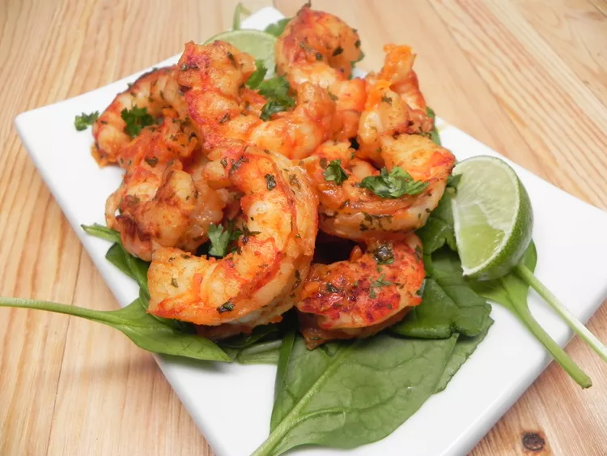

Pan-Fried Shrimp

Description
A simple recipe for pan fried shrimp.
Feel free to add other seasonings you like!
Ingredients
- 8 tablespoons butter, divided
- 1 pound peeled and deveined bay shrimp
- 1 tablespoon lemon juice, divided
- 1 pinch garlic salt, or to taste
- salt and ground black pepper to taste
Steps
- Melt 6 tablespoons butter in a large skillet over high heat.
- Add shrimp; cook and stir in hot butter until browned, about 2 minutes. Reduce heat to medium-low.
- Stir in 1 1/2 teaspoons lemon juice, garlic salt, salt, and pepper; cook until heated through, about 1 minute.
- Remove from heat; stir in remaining 2 tablespoons butter and 1 1/2 teaspoons lemon juice. Serve and enjoy!
Back to Main Page